Your router is sending netflow records to your srvX, and that host is running NfSen to collect this data.
http://srvX.lab.workalaya.net/nfsen/nfsen.php
Now let's use NfSen to explore the traffic flows in the network, with the aim of finding out who was been downloading the most data. Look carefully at the output generated at each step - ask an instructor to explain if you don't understand what you see.
The NfSen home page shows a matrix of graphs: flows per second on the left, packets per second in the middle, bits per second on the right. Click on the top-right graph (bits per second, one day view) to get to the Detail page.
Change from "Single Timeslot" to "Time Window":
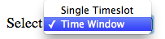
Once you have done this, the vertical selector arrow and line in the graph window can be split.
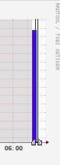
Pull the left half of the arrow to the left and the right half to the right, to select the time period of interest. Then you should see some summary statistics appear in the table below the graph, for the time period you have selected:
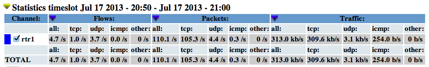
Summary statistics.
Select "List Flows", make sure none of the "Aggregate" boxes are checked, and then click process. This will display some flows at the beginning of the time period.
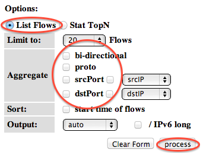
List flows.
Increase the limit from 20 flows to 100 flows. Notice that much network traffic consists of large numbers of very small flows - for example a DNS query/response will be two flows, one from client to DNS server, and one back again.
By selecting "bi-directional" you can get NfSen to associate the inbound and outbound flows into a single line:
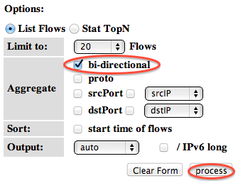
Bi-directional flows.
However it's still too much work to wade through this looking for interesting traffic. Uncheck the "Bi-directional" box before continuing.
If we know which host we want to examine, we can apply a filter to show only those flows to and from that host. Do this by entering "host 100.68.X.Y" in the filter box, and then pressing process again. (Replace 100.68.X.Y with the address of one of a host on your campus. e.g. 100.68.1.21)
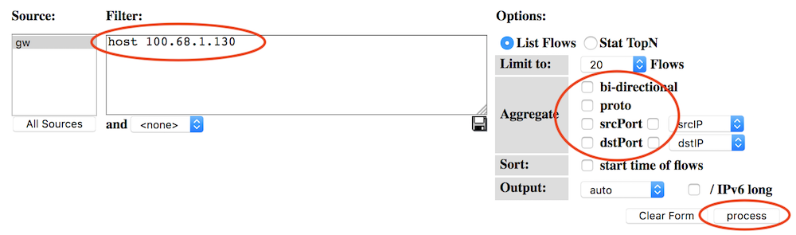
Flows to and from one host.
This is a little better, but we would still have to wade through lots of small flows to find anything significant. We need to take a different approach.
The next thing we can do is to get NfSen to sort the flows by number of bytes. Remove any filter from the Filter box; select "Stat TopN", stat "Flow Records", order by "Bytes". Ensure all the aggregate boxes are all unchecked, then press process
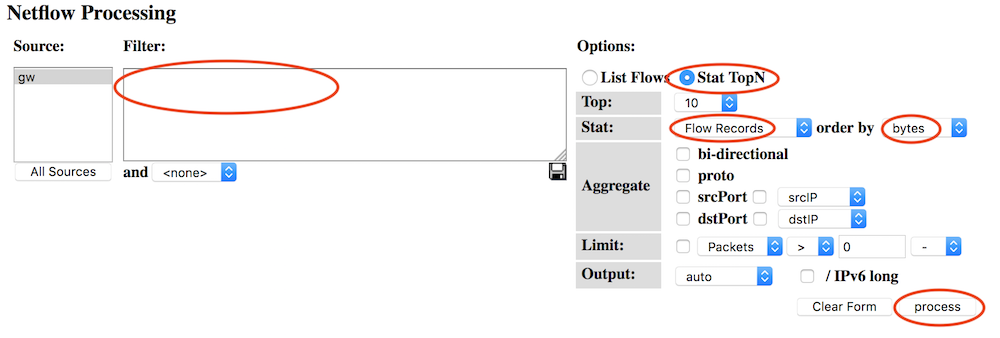
Find top flows by bytes.
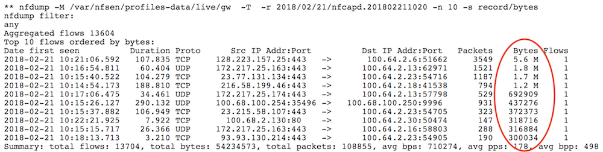
Output: top flows by bytes.
This is a definite improvement, as the flows with the largest number of bytes are shown first. However there's a problem - we are still looking at individual flows. It's possible that many small flows to the same host would add up to a large amount of traffic, but we wouldn't see them at the top of this list.
What we want to see is a single line for each host in our network, showing the total amount of traffic delivered to that host.
To do this, Stat "DST IP Address", order by "bytes".
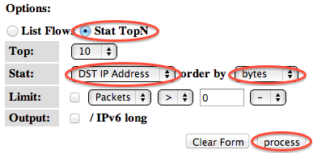
Group flows by DST IP Address.
This is now much closer to what we want: there is one line for each destination IP address, and they are ordered by total bytes, largest first.
But there is still one problem - can you see what it is? We are seeing a mixture of inbound flows (where the destination IP is inside our network) and outbound flows (where the destination IP is on the Internet). We are only interested in the inbound flows, so apply a filter which shows only traffic to your group's network: "dst net 100.68.X.0/24" (replacing X with your group number)
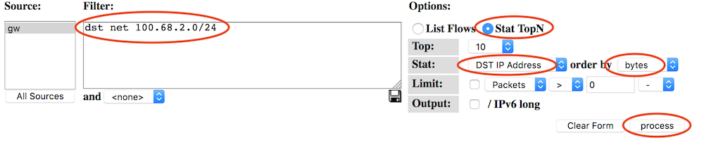
Flows to local network, grouped by DST IP Address.
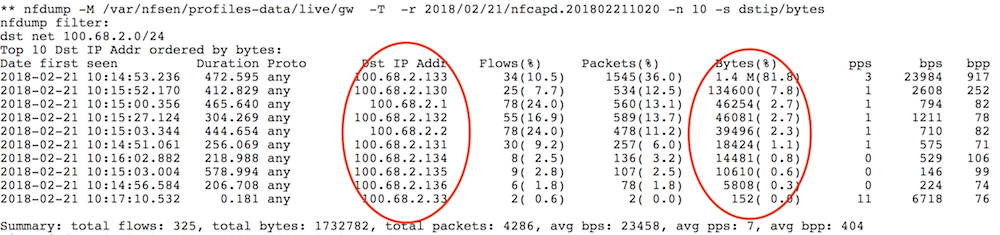
Output: Flows to local network, grouped by DST IP Address.
At last we have what we want. The first record you see should tell you the local machine which has downloaded the most data in the period selected.
Question: what changes would you have to make to this query to find out which machines in your network are uploading the most data to the Internet?
Now that we know which host has downloaded the most data, we might want to see where it has been downloading from.
Let's start by looking at the top flows to that host. Change the filter to "dst host 100.68.X.Y" (the IP address you just found). Then select Stat "Flow Records", order by "bytes", and process.
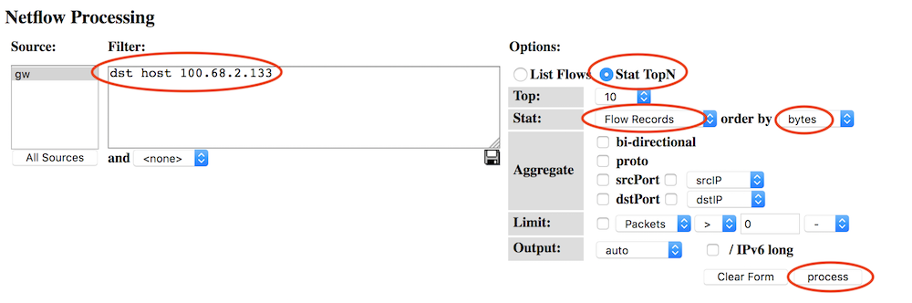
Largest flows to one host.
You should now see the flows inbound to that host, largest first. But again, we're only seeing large individual flows; a collection of small flows may add together to a large amount of traffic.
Since we are only looking at flow records to one particular destination IP address, we can group these records by source IP address.
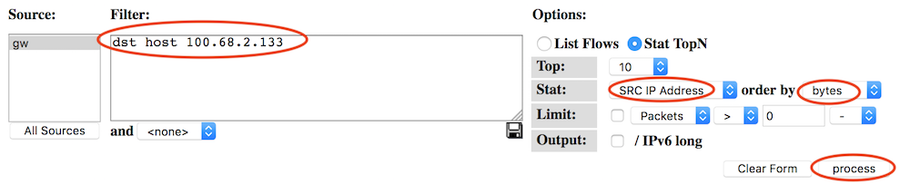
Flows to one host, grouped by SRC IP address.
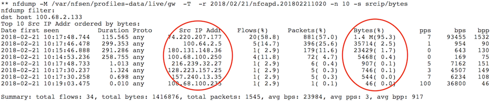
Output: Flows to one host, grouped by SRC IP address.
And now we have one row for each IP address this host has been downloading from, with the total number of bytes downloaded from each IP, largest total first.
By clicking on an IP address, you will get some information from reverse DNS and whois.
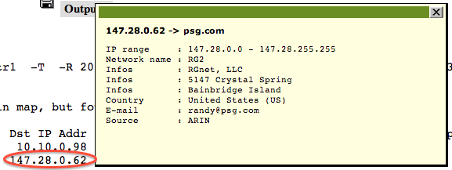
Whois information.
NfSen offers some other ways to summarise the flows, using the Aggregate checkboxes. In this example we'll look again at traffic inbound to your network.
When you click one or more of the Aggregate boxes, NfSen combines all flows that share the same values of the attribute(s) you have selected.
To start this exercise, set the filter to "dst net 100.68.X.0/24" (X = your group). Select "Stat TopN", Stat "Flow Records", order by "bytes". Then try the following aggregates, remembering to click process after each one.
Check "proto". You should get just one row each for TCP, UDP and ICMP, showing the total amount of traffic using each protocol. Sometimes this may show other protocols are active on your network (e.g. protocol 50 = IPSEC ESP; in Linux the file /etc/protocols has a list of them)
Check both "proto" and "srcPort". This tells NfSen to combine together flows which have the same proto and the same srcPort. Depending on what activity has been going on, you may see one line giving the total for TCP port 80, one line for TCP port 443, one line for UDP port 53, and so on.
Check "srcIP" by itself. This gives one row for each distinct source IP address, and is the same as selecting Stat SRC IP.
Check both "srcIP" and "dstIP". You will get one row for each unique pair of srcIP and dstIP seen, with the total traffic between those two endpoints.
How would you change the filter to look at outbound traffic, rather than inbound traffic?
If you have a router with a full BGP table, you can aggregate netflow records by AS number. This is a useful way to find out what networks you are exchanging the most traffic with.